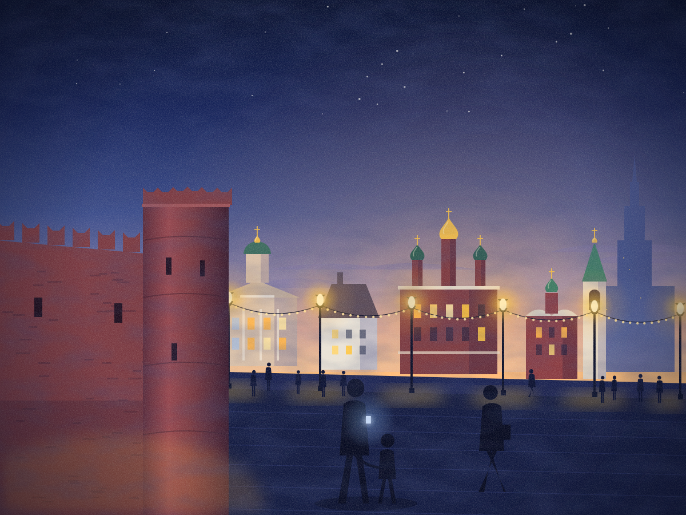

Мои дела
Список хранится в этом браузере: на другом телефоне его не будет.
Здесь появятся дела, которые вы начнёте.
Откройте дело по ссылке из письма или введите код на первом экране. Дело появится здесь, и продолжить его можно будет с той точки, где вы остановились.
Квесты по Москве
-

Дело №1 Синяя птица
ЗИЛАРТ · юг МосквыЧьё честное слово стоит в письме 1931 года — и было ли оно сдержано? Ответ — на улицах ЗИЛАРТа.
Скоро в продаже990 ₽Кто дал слово?прежняя цена 1590 ₽за дело -

Дело №2 Башня выше Ивана Великого
Чистые пруды и ПокровкаКто знал заранее, что в Меншикову башню ударит молния? Проверьте на Чистых прудах, кара ли это за гордыню.
В разработкеКто знал заранее? -

Дело №3 Туман в овраге
КоломенскоеИз какого года гонец, что вышел из тумана в Коломенском? Сверьте его рассказ с церквями и воротами и проводите домой.
В разработкеКакой год у гонца? -

Дело №4 Стёртые имена
Красная площадь и Александровский садКто вписал чужие записи в обмеры Красной площади 1936 года? Перемерьте сами и решите, что вернуть на место.
В разработкеЧья это рука? -

Дело №5 Фальшивый лист
Китай-городКто подбрасывает ошибку в лист новичка? Новичок — вы: сверьте каждую подробность с Китай-городом, и вас примут в цех.
В разработкеЧья это ошибка? -

Дело №6 Загадки Турандот
Арбат и арбатские переулкиКакая из трёх масок унесла у принцессы Турандот восьмую загадку? Сверьте их показания с Арбатом и верните пропажу.
В разработкеКто унёс загадку? -

Дело №7 Шестнадцатая сестра
ВДНХ · север МосквыКто из шестнадцати золотых сестёр с фонтана ВДНХ пишет открытки? Пришлите им виды выставки и найдите её в кругу.
В разработкеКто пишет открытки?
Есть код из письма или подарка?
Откройте ссылку из письма: дело откроется само и появится в этом списке. Если ссылки нет, выберите дело и введите код на первом экране.
Код потерялся? Напишите нам в Telegram — найдём.